<title>Terepasztal Hill Climb</title>
<link rel="stylesheet" href="https://fonts.googleapis.com/css2?family=Archivo:wght@500;700&family=Atkinson+Hyperlegible:wght@400;700&family=IBM+Plex+Mono:wght@400;500&display=swap">
<style>
:root{--ground:#edf0ea;--panel:#f8faf6;--ink:#1c231f;--muted:#58645c;--line:#cdd5cc;--rail:#9a4f2c;--ok:#3f7a3a;
  font-family:"Atkinson Hyperlegible",system-ui,sans-serif;}
@media (prefers-color-scheme:dark){:root:not([data-theme="light"]){--ground:#141a16;--panel:#1b221d;--ink:#e3e9e2;--muted:#9aa79e;--line:#2e3831;--rail:#d98a5f;--ok:#7fbf73;color-scheme:dark}}
:root[data-theme="dark"]{--ground:#141a16;--panel:#1b221d;--ink:#e3e9e2;--muted:#9aa79e;--line:#2e3831;--rail:#d98a5f;--ok:#7fbf73;color-scheme:dark}
body{background:var(--ground);color:var(--ink);font-size:15px;line-height:1.55;padding-inline:clamp(16px,3vw,40px);padding-block:32px 64px}
main{max-width:1500px;margin:0 auto;display:grid;gap:48px}
h1,h2{font-family:Archivo,system-ui,sans-serif;text-wrap:balance;margin:0}
h1{font-size:30px;font-weight:700}
h2{font-size:21px;font-weight:700}
header,section{display:grid;gap:14px}
p{margin:0;max-width:72ch}
.muted{color:var(--muted)}
.mono{font-family:"IBM Plex Mono",ui-monospace,monospace;font-size:13px;font-variant-numeric:tabular-nums}
.grid{display:grid;gap:14px;grid-template-columns:repeat(auto-fit,minmax(min(100%,440px),1fr))}
.grid.three{grid-template-columns:repeat(auto-fit,minmax(min(100%,380px),1fr))}
figure{margin:0;display:grid;gap:6px;align-content:start}
figure img{width:100%;height:auto;display:block;border:1px solid var(--line);border-radius:3px;cursor:zoom-in}
figcaption{font-size:13.5px;color:var(--muted)}
figcaption b{color:var(--ink);font-weight:700}
.tag{font-family:"IBM Plex Mono",monospace;font-size:11.5px;letter-spacing:.06em;text-transform:uppercase;color:var(--rail)}
.status{display:grid;gap:6px;padding:14px 16px;background:var(--panel);border:1px solid var(--line);border-radius:4px}
.status li{margin:0}
.status ul{margin:0;padding-left:18px;display:grid;gap:4px}
.profile{display:flex;gap:3px;flex-wrap:wrap;align-items:flex-end}
.profile span{width:22px;background:var(--rail);opacity:.8;border-radius:2px 2px 0 0;display:flex;justify-content:center;align-items:flex-start;color:var(--panel);font-size:10px}
dialog{padding:0;border:0;background:transparent;max-width:98vw;max-height:98vh}
dialog img{max-width:98vw;max-height:96vh;display:block}
dialog::backdrop{background:rgba(0,0,0,.8)}
a{color:var(--rail)}
:focus-visible{outline:2px solid var(--rail);outline-offset:2px}
</style>
<main>
<header>
  <span class="tag">PR #20 · round 4</span>
  <h1>Hills, rails and climbing trains</h1>
  <p class="muted">Every image is the game's own renderer. Click an image for full size.</p>
  <div class="status">
    <ul>
      <li><b>Shipped:</b> biome ground on mountain tops.</li>
      <li><b>Shipped:</b> bridges over land stand on piers cut to the ground under them, in stone and wood. Bridges over water are unchanged.</li>
      <li><b>Shipped:</b> the supported-bridge rules. Every tile of a curve or switch off smooth ground needs a platform. The piece sits at the level of the rails it meets. It is refused when those rails disagree or when it would sit below the ground.</li>
      <li><b>Fixed:</b> high-speed curves could slip onto slopes, because the builder read some of their tiles as straight track.</li>
      <li><b>Your call:</b> how far to shade the original summit sprites toward the terrain rock.</li>
    </ul>
  </div>
</header>

<section>
  <span class="tag">Peaks</span>
  <h2>The original summits, shaded to the terrain</h2>
  <p class="muted">The original sprites stay. In the last two columns their rock is recoloured toward the bank rock the painter uses, and their snow toward the painter’s snow. From “Lit” onward they also get the same 6% per level height light as the ground they stand on (24% at level 4).</p>
  <div class="grid">
    <figure>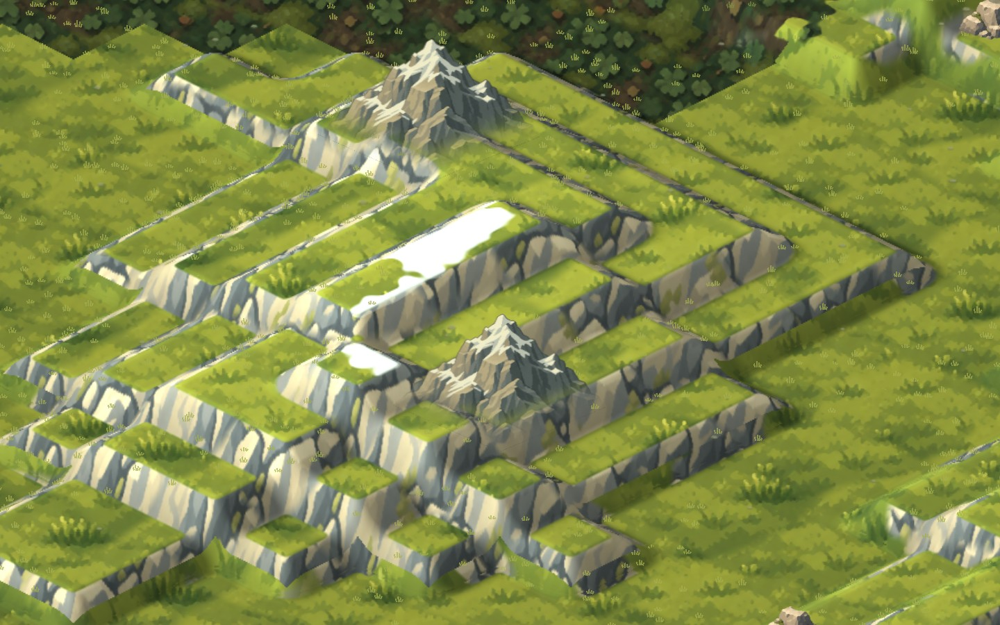<figcaption><b>Original</b> · zoom 3.2</figcaption></figure>
    <figure>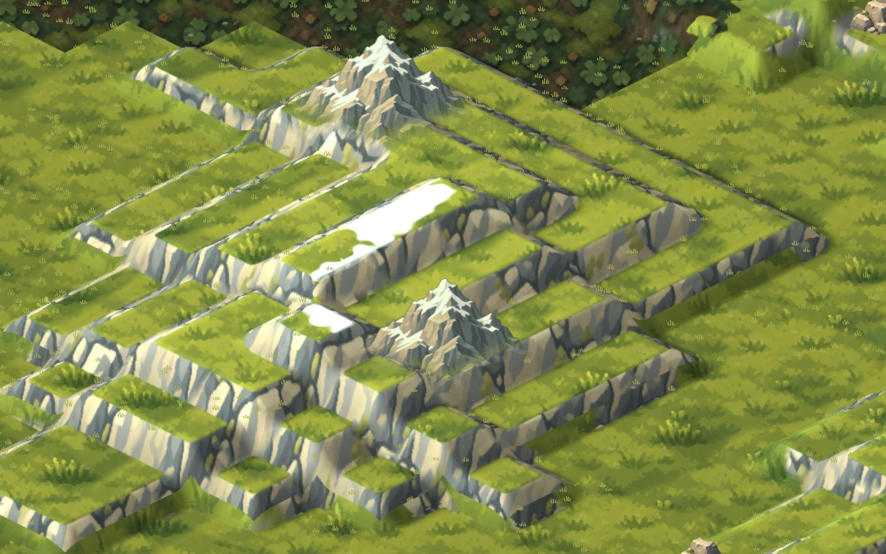<figcaption><b>Lit</b> · height light only</figcaption></figure>
    <figure><figcaption><b>Half match</b> · lit, halfway to the terrain rock</figcaption></figure>
    <figure>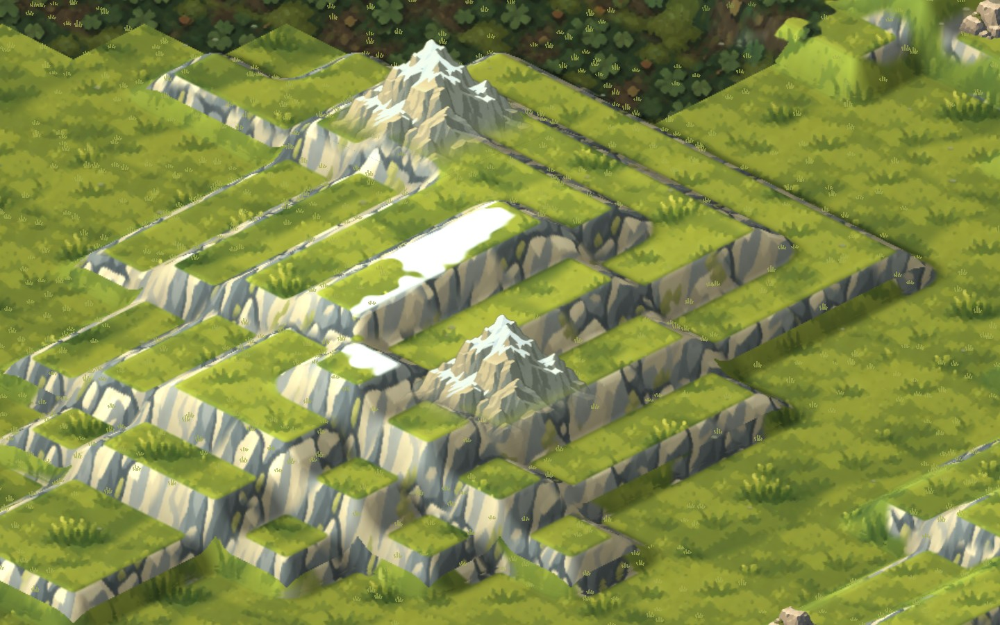<figcaption><b>Full match</b> · lit, terrain rock and snow</figcaption></figure>
    <figure>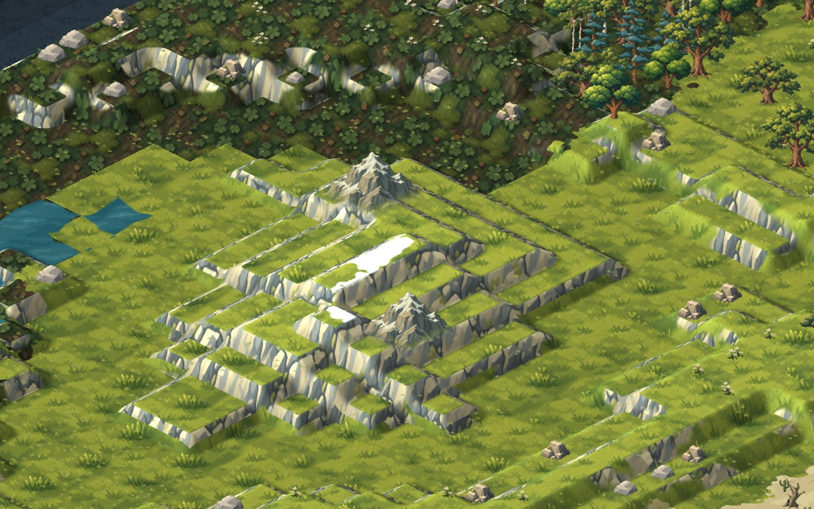<figcaption><b>Original</b> · zoom 2</figcaption></figure>
    <figure>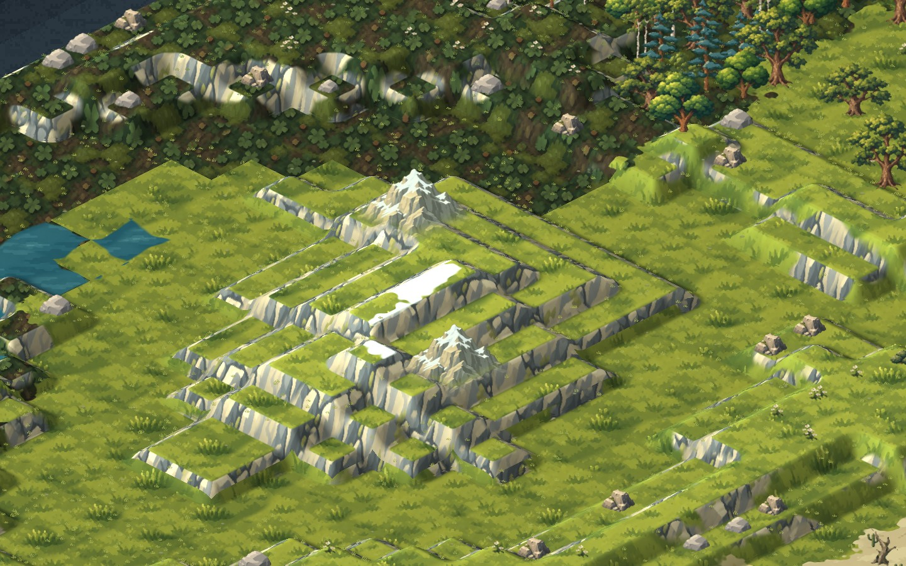<figcaption><b>Full match</b> · zoom 2</figcaption></figure>
  </div>
</section>

<section>
  <span class="tag">Bridges over land</span>
  <h2>Piers cut to the ground</h2>
  <p class="muted">Each pier is drawn from the ground under it up to the deck, so none is longer than the drop and none sinks into the terrain. Stone tiles get two masonry piers. Wood tiles get a braced timber trestle. A curve or switch gets a square pad with a pier at each corner. Below: a valley two levels deep bridged at level 2, and the one-level dip from your worked example.</p>
  <div class="grid">
    <figure>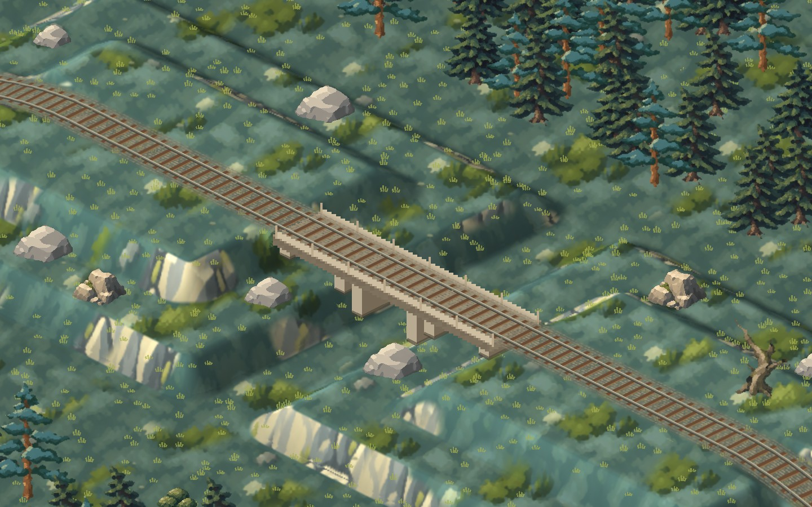<figcaption><b>Stone</b> · two-level valley · zoom 4</figcaption></figure>
    <figure>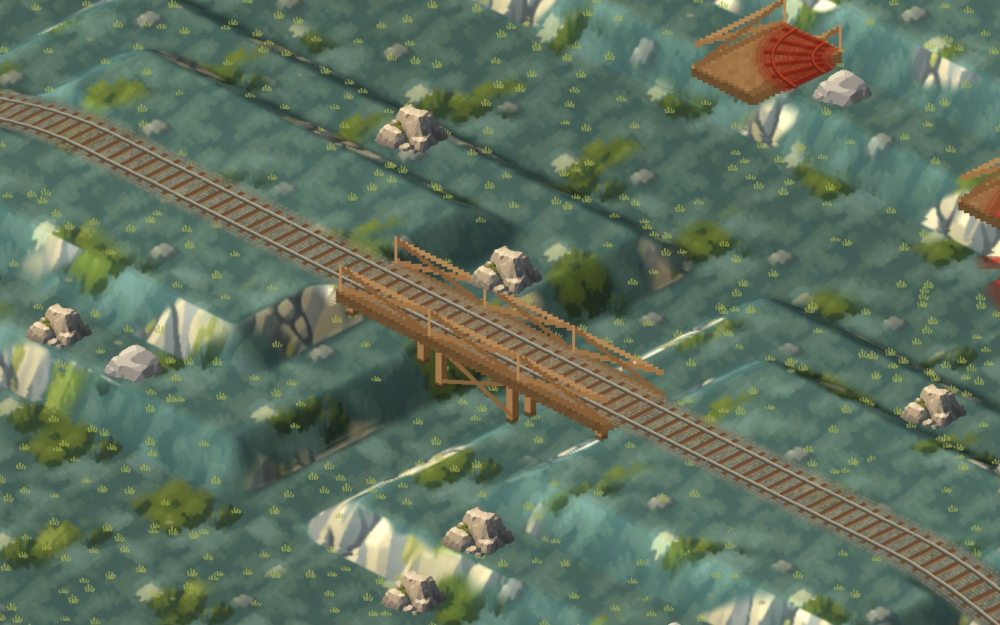<figcaption><b>Wood</b> · two-level valley · zoom 4</figcaption></figure>
    <figure>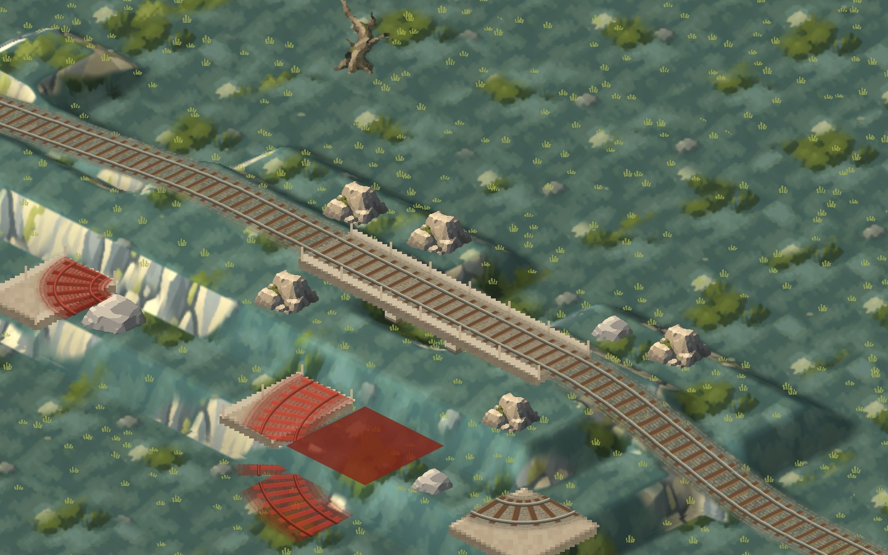<figcaption><b>Stone</b> · one-level dip, plus the supported-piece tests · zoom 4</figcaption></figure>
    <figure>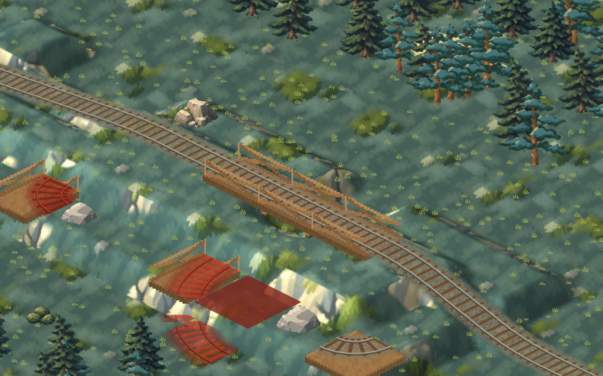<figcaption><b>Wood</b> · one-level dip · zoom 4</figcaption></figure>
  </div>
</section>

<section>
  <span class="tag">Supported pieces</span>
  <h2>Curves and switches on platforms</h2>
  <p class="muted">Each case was tried with the game’s builder in both materials. Red ghosts are refusals.</p>
  <div class="status"><ul>
      <li><b>Allowed:</b> Curve on a platform, meeting its rails at one level</li>
      <li><b>Refused:</b> Curve on a platform, its rails at two levels · “A supported piece must meet its rails at one level, no lower than the ground under it”</li>
      <li><b>Refused:</b> High-speed curve with a platform under one tile of four · “Curves and switches need smooth ground: only straights and crossings climb a slope, unless bridge platforms support every tile of the piece”</li>
  </ul></div>
  <div class="grid">
    <figure>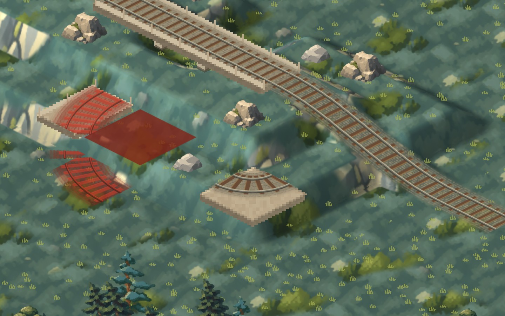<figcaption><b>Stone</b> · supported curve at deck level 1 · zoom 5</figcaption></figure>
    <figure>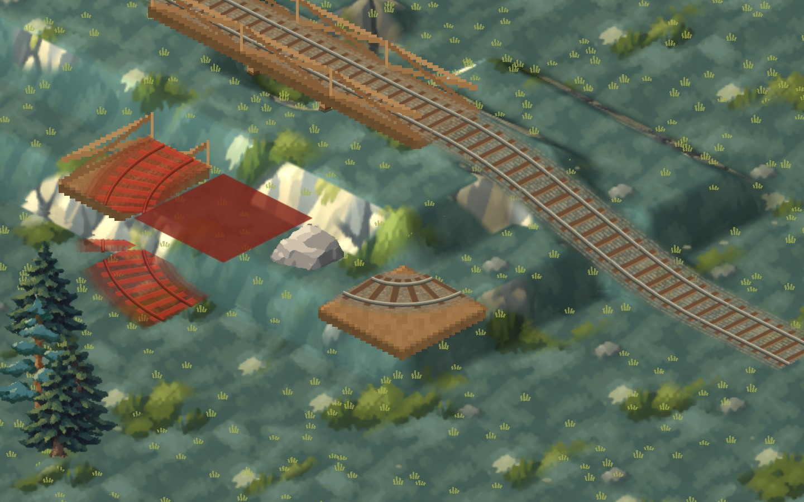<figcaption><b>Wood</b> · supported curve · zoom 5</figcaption></figure>
    <figure>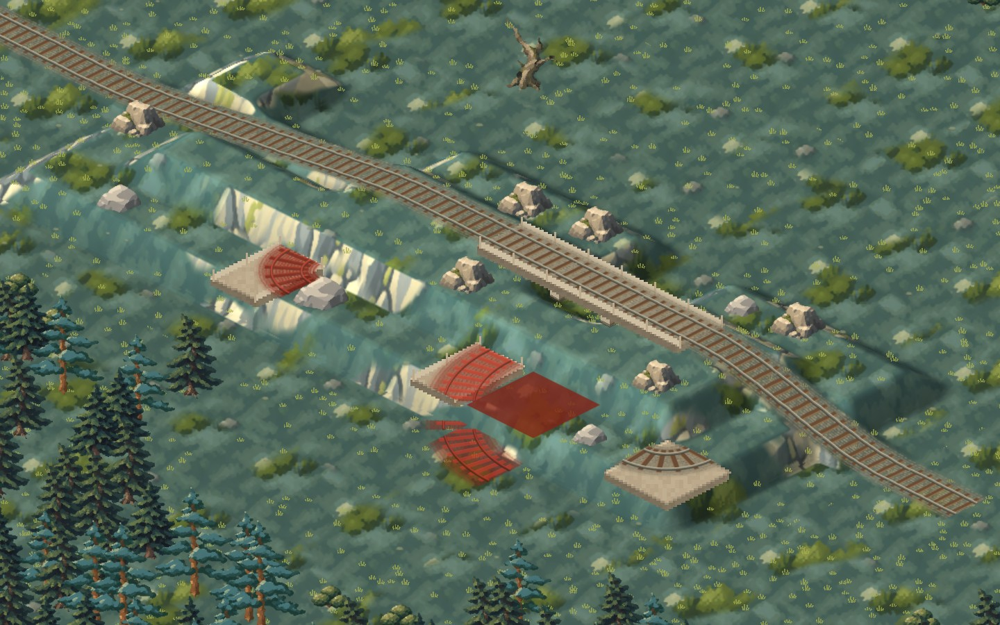<figcaption><b>Stone</b> · all cases · zoom 3</figcaption></figure>
    <figure>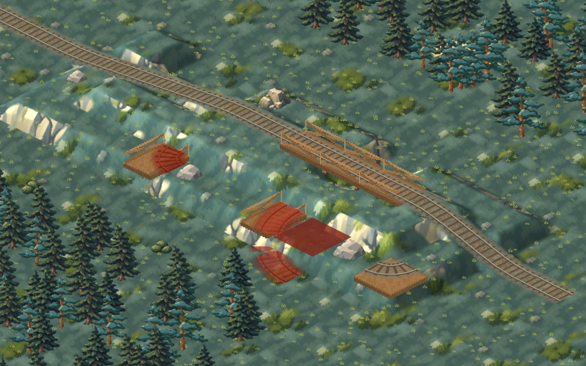<figcaption><b>Wood</b> · all cases · zoom 3</figcaption></figure>
  </div>
</section>

</main>
<dialog id="zoom"></dialog>
<script>
const d=document.getElementById('zoom'),im=d.querySelector('img');
document.querySelectorAll('figure img').forEach(i=>i.addEventListener('click',()=>{im.src=i.src;im.alt=i.alt;d.showModal();}));
d.addEventListener('click',()=>d.close());
</script>
